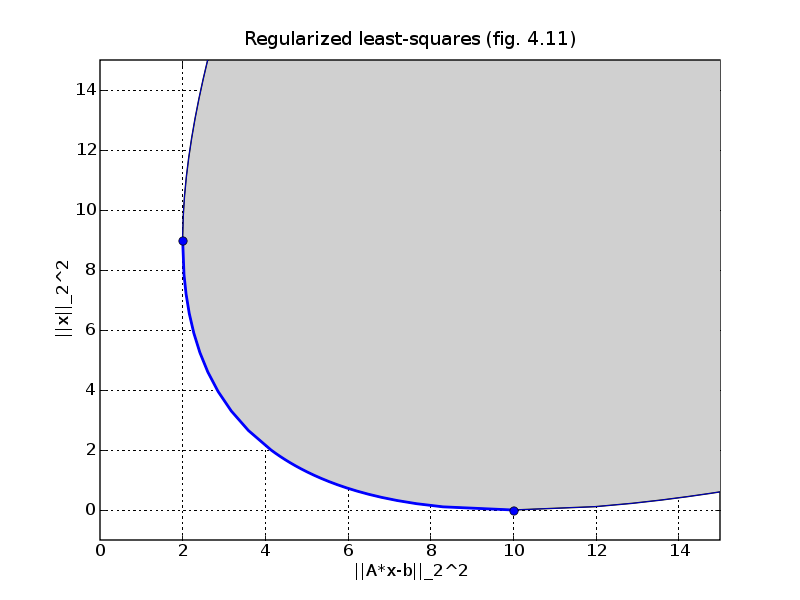

source code, data file (rls.bin)
# Figure 4.11, page 185.
# Regularized least-squares.
from pickle import load
from cvxopt import blas, lapack, matrix, solvers
solvers.options['show_progress'] = 0
data = load(open("rls.bin",'rb'))
A, b = data['A'], data['b']
m, n = A.size
# LS solution
xls = +b
lapack.gels(+A, xls)
xls = xls[:n]
# We compute the optimal values of
#
# minimize/maximize || A*x - b ||_2^2
# subject to x'*x = alpha
#
# via the duals.
#
# Lower bound:
#
# maximize -t - u*alpha
# subject to [u*I, 0; 0, t] + [A, b]'*[A, b] >= 0
#
# Upper bound:
#
# minimize t + u*alpha
# subject to [u*I, 0; 0, t] - [A, b]'*[A, b] >= 0.
#
# Two variables (t, u).
G = matrix(0.0, ((n+1)**2, 2))
G[-1, 0] = -1.0 # coefficient of t
G[: (n+1)**2-1 : n+2, 1] = -1.0 # coefficient of u
h = matrix( [ [ A.T * A, b.T * A ], [ A.T * b, b.T * b ] ] )
c = matrix(1.0, (2,1))
nopts = 40
alpha1 = [2.0/(nopts//2-1) * alpha for alpha in range(nopts//2) ] + \
[ 2.0 + (15.0 - 2.0)/(nopts//2) * alpha for alpha in
range(1,nopts//2+1) ]
lbnds = [ blas.nrm2(b)**2 ]
for alpha in alpha1[1:]:
c[1:] = alpha
lbnds += [ -blas.dot(c, solvers.sdp(c, Gs=[G], hs=[h])['x']) ]
nopts = 10
alpha2 = [ 1.0/(nopts-1) * alpha for alpha in range(nopts) ]
ubnds = [ blas.nrm2(b)**2 ]
for alpha in alpha2[1:]:
c[1:] = alpha
ubnds += [ blas.dot(c, solvers.sdp(c, Gs=[G], hs=[-h])['x']) ]
try: import pylab
except ImportError: pass
else:
pylab.figure(1, facecolor='w')
pylab.plot(lbnds, alpha1, 'b-', ubnds, alpha2, 'b-')
kmax = max([ k for k in range(len(alpha1)) if alpha1[k] <
blas.nrm2(xls)**2 ])
pylab.plot( [ blas.nrm2(b)**2 ] + lbnds[:kmax] +
[ blas.nrm2(A*xls-b)**2 ], [0.0] + alpha1[:kmax] +
[ blas.nrm2(xls)**2 ], '-', linewidth=2)
pylab.plot([ blas.nrm2(b)**2, blas.nrm2(A*xls-b)**2 ],
[0.0, blas.nrm2(xls)**2], 'bo')
pylab.fill(lbnds[-1::-1] + ubnds + [ubnds[-1]],
alpha1[-1::-1] + alpha2+ [alpha1[-1]], facecolor = '#D0D0D0')
pylab.axis([0, 15, -1.0, 15])
pylab.xlabel('||A*x-b||_2^2')
pylab.ylabel('||x||_2^2')
pylab.grid()
pylab.title('Regularized least-squares (fig. 4.11)')
pylab.show()